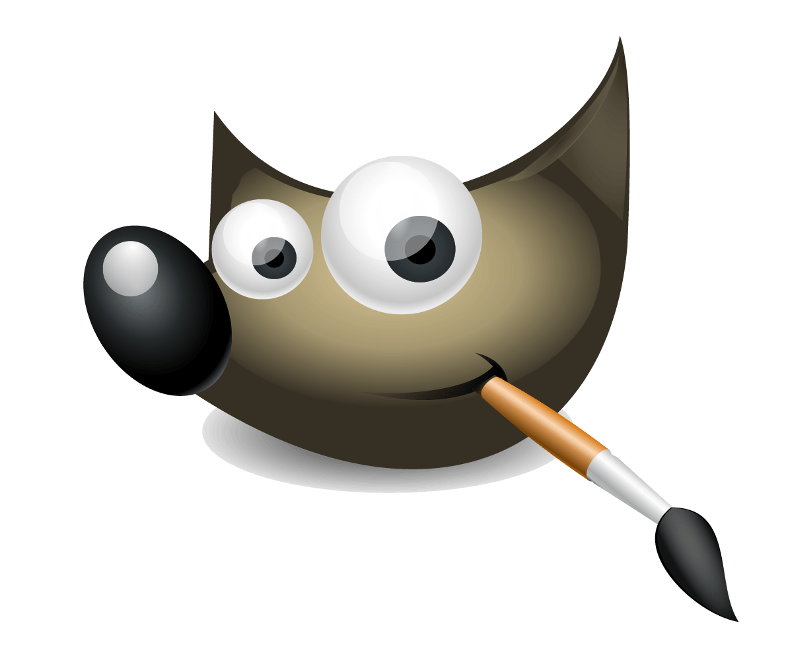

ПРОГРАМИ
Paint
Microsoft Paint
Microsoft Paint — простий растровий графічний редактор компанії Microsoft, який входить до усіх операційних систем Windows, починаючи з перших версій. У Windows 95 була введена нова версія Paint. Той же інтерфейс продовжує використовуватися в наступних версіях Windows. У Windows 98, Windows 2000 і Windows МЕ зображення могли бути збережені в форматах GIF і JPEG, якщо були установлені необхідні графічні фільтри від Microsoft (зазвичай вони установлювались разом з іншими компонентами від Microsoft, такими як Microsoft Office або Microsoft PhotoDraw). Починаючи з Windows XP фільтри стали попередньо встановленими, і тепер вже підтримували формати PNG і TIFF. У Windows Vista повністю змінена панель інструментів, допрацьовані деякі інструменти.

Історія
Перша версія Paint з'явилася в Windows 1.0. У Windows 3.0 був перейменований в PaintBrush. Але потім в Windows 95 і пізніших версіях Windows він був знову перейменований в Paint (проте, програма може викликатися і командою-затичкою pbrush, що є явне скорочення від Paint Brush). У версії з Windows 3.x і більш ранніх версіях підтримувалися тільки формати MSP, BMP, PCX і RLE. У наступних версіях з цих форматів залишилася підтримка лише одного — BMP.
Windows 7
У Windows 7 вперше за останні 14 років Microsoft Paint повністю перероблений, він отримав стрічковий (Ribbon) інтерфейс, додаткові пензлі, фігури, які дуже подібні на бібліотеку Microsoft Office. Ось короткий огляд нововведень:
- 9 різновидів пензлів (Brush):
- Звичайний пензлик (тепер — згладжений)
- Каліграфічний пензлик 1 (тепер — згладжений)
- Каліграфічний пензлик 2 (тепер — згладжений)
- Балончик (залишився без змін)
- Масляний пензлик (маже товстим штрихом)
- Пастельний пензлик (схожий на кольорову крейду)
- Маркер (замальовує кольором наполовину)
- Звичайний олівець (тонкий пензлик для імітації звичайного жорсткого олівця)
- Акварель (напівпрозорий плавний поступово зникаючий пензлик)
- Також оновилась бібліотека фігур, до стандартного еліпса, прямокутника, вектора, кривої, багатогранника і округленого прямокутника додано ще 17 фігур, серед яких: трикутник рівнобедрений, трикутник прямокутний, ромб, п'яти- і шестикутник, стрілки вправо, вліво, вверх, вниз; зірки: чотири-, п'яти- і шестикутна, прямокутна, округла і «думаюча» бульбашки для коміксів, серце, блискавка.
- Намалювавши фігуру, можна ще редагувати її параметри — повернути, розтягнути, змінити колір і фактуру.
- 7 різновидів залиття/контуру:
- Немає/відсутнє
- Однотонне
- Пастель
- Маркер
- Масло
- Олівець
- Акварель
- Також в меню «Вид» додані: нова лінійка, режим попереднього перегляду друку
- Можливість отримання матеріалу для редагування зі сканера
- Тепер можливо використовувати різні стилі для кожного фрагменту тексту всередині однієї рамки
- Шкала масштабу нанесена як в сторону збільшення, так і в сторону зменшення.
Виділення
Виділений фрагмент стає «плаваючим» (він може бути перенесений в будь-яке місце робочої області без зміни самої картинки), а його місце заповнюється фоновим кольором. При цьому, якщо в момент початку перетягування натиснута клавіша Ctrl, в початковій позиції залишається. «штамп» — туди карбується копія плаваючого виділення (при первинному переміщенні виходить так, ніби віднесена копія виділеного, а на вихідному місці нічого не змінилося). Якщо натиснута клавіша Shift — то подібний штамп робиться і у всіх проміжних точках переміщення.
Недоліки
- Відсутня функція зміни яскравості(насиченості), контрасту і т. д.
- Немає можливості при зміні розміру вказати бажаний розмір у пікселях (функція з'явилась в Windows 7).
- Неможливо вирівняти шрифт за правим краєм, чи по центру.
- Неможливо зрушувати кордони області виділення (при цьому змінюються пропорції виділеного фрагменту).
- Неможливо обертати фігури на певну градусну міру.
GIMP
GIMP (The GNU Image Manipulation Program) — растровий графічний редактор, із деякою підтримкою векторної графіки. Проєкт розпочали 1995 року Spencer Kimball і Peter Mattis як навчальний проєкт в Берклі. В 1997, після закінчення ними університету, GIMP став частиною проєкту GNU. Програма підтримується та розвивається товариством добровольців, ліцензована за умовами GNU General Public License версії 3+, починаючи з релізу 2.8. Символом GIMP є койот Вілбер (Wilber). Програма працює на системах Microsoft Windows, Gnu/Linux, FreeBSD (або OpenBSD), MacOS X, OpenSolaris. До сфер застосування GIMP належать цифрове ретушування знімків, створення цифрової графіки, комбінування й цифрова обробка зображень, автоматизовані операції над графічними файлами, перетворення файлів з одного формату в інший. GIMP часто використовується як вільна й безплатна альтернатива до Adobe Photoshop.
Paint Tool SAI
SAI 2
SAI або Easy Paint Tool SAI (ペ イ ン ト ツ ー ルル SAI) — легкий растровий графічний редактор та програмне забезпечення для малювання для Microsoft Windows, розроблене та опубліковане Systemax Software.

Історія розробки
Розробка SAI розпочалася 2 серпня 2004 року Коджі Комацу, програмістом і президентом SYSTEMAX Software Development . Альфа-версія була випущена 13 жовтня 2006 р. Програмне забезпечення перейшло на стадію бета-розробки 21 грудня 2007 р. Офіційний реліз (1.0.0) програми відбувся 25 лютого 2008 року, а попередній перегляд оновлення був опублікований незабаром після цього. Він був доступний в Microsoft Windows з 98 по 10. На даний момент графічний редактор офіційно доступний японською мовою та має англійську версію. Також існує декілька любительських перекладів від користувачів, зокрема українською та російською. Офіційна версія англійською з'явилася 31 березня 2008 року, з цієї дати також приймалися платежі через PayPal, крім платіжних систем BitCash та TelecomCredit, які були доступні японським користувачам.
Можливості
SAI - це легка програма для малювання. Інтерфейс користувача дозволяє одночасно відкривати кілька документів. Малюнок полотна можна як масштабувати, так і обертати за допомогою повзунків на навігаторі або гарячих клавіш, налаштованих на клавіатурі. . На панелі інструментів у верхній частині екрана також є кнопка для дзеркального відображення креслення без віддзеркалення фактичного креслення. Також можна відкрити кілька вікон перегляду для одного документа. Надається загальнодоступна панель (яку можна використовувати як панель змішування кольорів), яка зберігається між сесіями. Кольори можна зберігати на панелі зразків. В програмі реалізовані різні інструменти для растрового малювання, такі як кисть, акварель, ручка та маркер, які можна легко налаштувати та зберігати в слотах в інтерфейсі користувача програми. Існує також набір інструментів для векторної графіки, призначених для малювання. Вони, як і растрові інструменти, можуть бути налаштовані на чутливість до тиску. Існує функція переміщення ручки та згладжування тиску, яку можна налаштувати вручну. Також варто зазначити, що програма повністю підтримується графічним планшетом. Інструменти виділення включають простий квадратний вибір, ласо та чарівну паличку, які можна налаштувати для згладжування. Існує також інструмент для вибору пензля, який можна налаштувати, як пензель для малювання. SAI постачається з повним набором інструментів трансформації, які можуть працювати над виділеннями, включаючи переміщення, зміну розміру, обертання та вільне (перспективне) перетворення. Будь-яку серію перетворень можна налаштувати, а потім застосувати відразу до певного виділення, мінімізуючи пом'якшення зображення. Роботу можна виконувати на різних шарах, які легко згрупувати. Ці шари можна замаскувати, відсікаючи їх до нижнього. Це дозволяє додавати затінення та виділення до областей. Також шари надають змогу використовувати попередні нариси, що пізніше не будуть відображатися на готовому малюнку. Деякі загальні функції, що існують у подібному програмному забезпеченні, такі як текстові шари, градієнти та інструменти фігури, тут не реалізовані, оскільки SAI зосереджується на графіці та малюванні, тоді як остаточна композиція часто робиться за допомогою іншого додатка. SAI відображає білий колір і прозорість однаково, що може спричинити значні відмінності у відображенні під час експорту до іншої програми, наприклад, Adobe Photoshop. Функція друку також відсутня, але документи можна експортувати у широкий спектр популярних форматів, таких як .psd , .bmp або .jpg, на додаток до власного файлу .sai. Оскільки програма не фокусується на редагуванні зображень, доступні лише налаштування Яскравість / Контраст та Тон / Насиченість. Користувачі можуть використовувати іншу програму для більш складного редагування, але коли зображення відкриється в SAI, його властивості можуть змінитися.
Формати файлів, які підтримуються
- .psd (стандартний тип файлів для Adobe Photoshop)
- .sai (власний тип файлів)
- .jpg
- .bmp
- .png
- .tga
Blender
Blender — програмний пакет для створення тривимірної комп'ютерної графіки, що включає засоби моделювання, анімації, рендерінгу, після- обробки відео. До версії 2.80 містив рушій Blender Game Engine для створення відеоігор. Пакет є вільним програмним забезпеченням та розповсюджується під ліцензією GNU GPL. Особливостями пакету є малий розмір, висока швидкість рендерінгу, наявність версій для багатьох операційних систем — FreeBSD, GNU/Linux, Mac OS X, SGI Irix 6.5, Sun Solaris 2.8 (sparc), Microsoft Windows, SkyOS, MorphOS та Pocket PC. Пакет має такі функції, як симуляція динаміки твердих тіл (Rigid Body), рідин (Liquid simulation) та м'яких тіл (Soft body), систему гарячих клавіш (hot key), велику кількість легко доступних розширень, написаних мовою Python. Починаючи з версії 2.61 з'явились функції «відстеження камери» (англ. camera tracking), та «захоплення руху» (англ. motion capture або mocap).